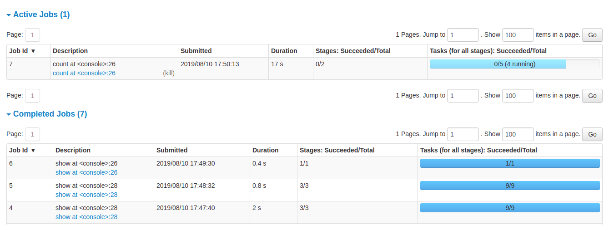
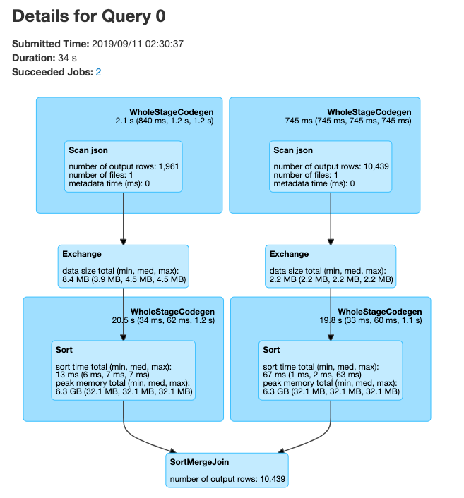
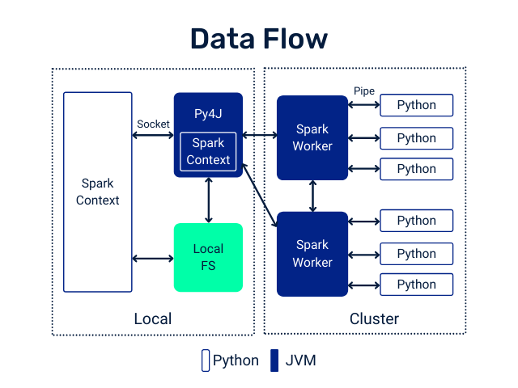

Lecture 9
Spark Diagnostics and UDFs
Looking Back
- Introduction to Apache Spark
- Spark RDDs — transformations and actions
- Spark DataFrames
- SparkSQL
Today
- Spark as a unified engine (review)
- Spark Diagnostic UI
- PySpark User Defined Functions (UDFs)
- UDF performance and Pandas UDFs
Spark: a Unified Engine
Connected and extensible

Caching and Persistence
By default, RDDs are recomputed every time you run an action on them. This can be expensive if you need to use a dataset more than once.
Spark allows you to control what is cached in memory.
To tell Spark to cache an object in memory, use persist() or cache():
cache()— shortcut for default storage level (memory only)persist()— customizable to memory and/or disk
collect CAUTION

PySparkSQL Cheatsheet
A handy reference for common PySpark operations:
Spark Diagnostic UI
Understanding how the cluster is running your job
Spark Application UI shows important facts about your Spark job:
- Event timeline for each stage of your work
- Directed acyclic graph (DAG) of your job
- Spark job history
- Status of Spark executors
- Physical / logical plans for any SQL queries
Tool to confirm you are getting the horizontal scaling that you need!
Adapted from AWS Glue Spark UI docs and Spark UI docs
Spark UI — Event Timeline

Spark UI — DAG

Spark UI — Job History

Spark UI — Executors

Spark UI — SQL

PySpark User Defined Functions
UDF Workflow

UDF Code Structure
Clear input
A single row of data with one or more columns used
Function
Some work written in Python that processes the input using Python syntax. No PySpark needed!
Clear output
Output with a declared return type
UDF Example
Problem: make a new column with ages for adults only
+-------+--------------+
|room_id| guests_ages|
+-------+--------------+
| 1| [18, 19, 17]|
| 2| [25, 27, 5]|
| 3|[34, 38, 8, 7]|
+-------+--------------+Adapted from UDFs in Spark
UDF Code Solution
from pyspark.sql.functions import udf, col
@udf("array<integer>")
def filter_adults(elements):
return list(filter(lambda x: x >= 18, elements))
# alternatively, with explicit type annotation
from pyspark.sql.types import IntegerType, ArrayType
@udf(returnType=ArrayType(IntegerType()))
def filter_adults(elements):
return list(filter(lambda x: x >= 18, elements))+-------+----------------+------------+
|room_id| guests_ages | adults_ages|
+-------+----------------+------------+
| 1 | [18, 19, 17] | [18, 19]|
| 2 | [25, 27, 5] | [25, 27]|
| 3 | [34, 38, 8, 7] | [34, 38]|
| 4 |[56, 49, 18, 17]|[56, 49, 18]|
+-------+----------------+------------+Alternative to Spark UDF
When possible, prefer built-in Spark functions — they’re optimized and run on the JVM without serialization overhead.
Another UDF Example
Separate function definition form — lets you test the function locally first:
from pyspark.sql.functions import udf
from pyspark.sql.types import LongType
# define the function — can be tested without Spark
def squared(s):
return s * s
# wrap in udf and define the output type
squared_udf = udf(squared, LongType())
# execute the udf
df = spark.table("test")
df.select("id", squared_udf("id").alias("id_squared")).show()Another UDF Example
Single function definition form using decorator:
Can also refer to a UDF in SQL
Register the function with Spark SQL:
Tip
Consider all the corner cases — where could the data be null or an unexpected value? Use Python control structures to handle them.
UDF Performance
UDF Speed Comparison

Costs of Python UDFs:
- Serialization/deserialization (like pickle files)
- Data movement between JVM and Python
- Less Spark optimization possible
Other ways to make Spark jobs faster (source):
- Cache/persist data into memory
- Use Spark DataFrames over RDDs
- Use Spark SQL functions before jumping to UDFs
- Save in serialized formats like Parquet
Pandas UDFs
What are Pandas UDFs?
From PySpark docs:
Pandas UDFs are user-defined functions that are executed by Spark using Apache Arrow to transfer data and Pandas to work with the data, which allows vectorized operations. A Pandas UDF is defined using
pandas_udfas a decorator or to wrap the function.
import pandas as pd
from pyspark.sql.functions import pandas_udf
@pandas_udf("string")
def to_upper(s: pd.Series) -> pd.Series:
return s.str.upper()
df = spark.createDataFrame([("John Doe",)], ("name",))
df.select(to_upper("name")).show()
# +--------------+
# |to_upper(name)|
# +--------------+
# | JOHN DOE|
# +--------------+Another Pandas UDF example
@pandas_udf("first string, last string")
def split_expand(s: pd.Series) -> pd.DataFrame:
return s.str.split(expand=True)
df = spark.createDataFrame([("John Doe",)], ("name",))
df.select(split_expand("name")).show()
# +------------------+
# |split_expand(name)|
# +------------------+
# | [John, Doe]|
# +------------------+Scalar Pandas UDFs
Vectorizing scalar operations — same-size input and output Series:
Regular UDF form:
Pandas UDF form — faster vectorized form (Spark 3.0+ syntax):
Note
PandasUDFType.SCALAR was deprecated in Spark 3.0. Use Python type annotations (pd.Series → pd.Series) instead.
Grouped Map Pandas UDFs
Split-apply-combine using Pandas syntax (Spark 3.0+ syntax):
Note
PandasUDFType.GROUPED_MAP was deprecated in Spark 3.0. Use applyInPandas() with type annotations instead.
Comparing Scalar and Grouped Map Pandas UDFs
Input:
- Scalar:
pandas.Series - Grouped map:
pandas.DataFrame
Output:
- Scalar:
pandas.Series - Grouped map:
pandas.DataFrame
Grouping semantics:
- Scalar: no grouping semantics
- Grouped map: defined by
groupbyclause
Output size:
- Scalar: same as input size
- Grouped map: any size
Note
Use Scalar Pandas UDFs for row-wise vectorized operations.
Use Grouped Map when you need split-apply-combine with arbitrary output sizes.